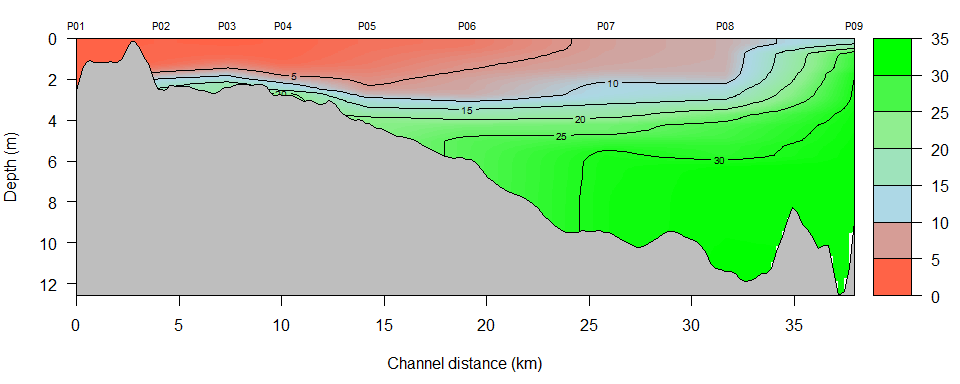

CTDplot
Marcus W. Beck, mbafs2012@gmail.com

Create two-dimensional contour plots of CTD water quality data. Install the package as follows:
install.packages('devtools')
library(devtools)
install_github('fawda123/CTDplot')
library(CTDplot)Minimal data requirements to use the functions are CTD observations at stations on a longitudinal axis. Bathymetric depth soundings at points along the sampling axis can also be used to improve the plot. The plotting function first creates new points along the sampling axis for interpolating CTD observations throughout space. The new sampling axis is matched to the nearest depth sounding or actual bottom depth at the closest CTD sampling station. If depth soundings are not provided, the bottom depth at each CTD station is used to interpolate a continuous depth along the sampling axis. The following shows matching of a sampling axis to depth soundings. The depth soundings are sub-sampled for illustration. The new sampling axis is colored by matched depth and the hydrological soundings are shown as black points.
nr <- 1:nrow(PB_dep_pts)
dep_smp <- PB_dep_pts[sample(nr, 200, replace = F), ]
get_depths(ctd_ex1, dep_smp, expand = 100, plot = T)
The main function is ctd_plot, which can be used with or without bathymetric data.
# using bottom values of CTD observations
ctd_plot(dat_in = ctd_ex1, var_plo = 'Salinity')
# with bathymetric data
ctd_plot(dat_in = ctd_ex1, var_plo = 'Salinity', dep_in = PB_dep_pts, window = 5, ylim = c(-12, 0))
# plot two dates with same color scaling
dat <- list(ctd_ex1, ctd_ex2)
ctd_plotmult(dat, 'Salinity', PB_dep_pts, var_labs = c('April', 'May'),
window = 5, ylim = c(-12, 0))